A centralized space for marketing knowledge, resources, and transition materials.
This application centralizes working sessions, brand knowledge, systems, resources, approvals, and practical deliverables for RKS Design and PA-AI.
Learning path
Working Sessions
Open any working session as a reference. Session numbers provide organization, not completion status.
Working Session 01
Marketing Overview & Ecosystem
Explore both brand perspectives to understand how RKS Design and PA-AI differ, how marketing supports each organization, and how responsibilities, approvals, platforms, and priorities connect.
Marketing Resources & Systems
Learn where shared files, templates, brand assets, historical projects, platforms, and daily marketing resources are stored.
Brand Voice & Standards
Understand the writing styles, messaging principles, visual standards, and brand differences that guide RKS Design and PA-AI.
Content Marketing & SEO
Plan, create, optimize, publish, and measure blogs, website content, newsletters, and search-driven marketing initiatives.
Graphic Design & Brand Assets
Create and manage reusable marketing assets, visual essays, templates, graphics, and approved brand materials.
Social Media Management
Plan, create, schedule, publish, recycle, and measure social content across RKS Design and PA-AI channels.
Website Front-End & Back-End Management
Manage the RKS WordPress and PA-AI Wix websites, including page editing, publishing, templates, SEO fields, and quality control.
Video Production & Studio Equipment
Prepare and operate the studio, cameras, audio, lighting, interviews, file handling, and production equipment.
Video Editing & Distribution Workflow
Edit, review, export, organize, publish, and distribute long-form and short-form video content across marketing channels.
Website, PR & Marketing Workflows
Follow the recurring workflows for website updates, press releases, media coordination, approvals, publishing, and promotion.
Marketing Operations & Project Management
Manage priorities, calendars, requests, approvals, project tracking, stakeholders, and day-to-day marketing operations.
AI Tools & Marketing Efficiency
Use AI tools responsibly to accelerate research, writing, design, organization, repurposing, and routine marketing work.
Weekly Marketing Workflow
Understand the expected weekly cadence for planning, content creation, meetings, publishing, reporting, and follow-up.
Knowledge Transfer & Q&A
Resolve remaining questions, confirm ownership and access, review open projects, and validate readiness to manage the marketing ecosystem independently.
Brand knowledge
Brand Modules
Two distinct brands, one standardized application experience.

RKS Design
Human-centered industrial design, innovation strategy, engineering, and product development.
Open RKS module
PA-AI
The Human Intelligence Layer that helps organizations align AI decisions with human trust, adoption, and value.
Open PA-AI moduleAction center
Current Deliverables
Reference library